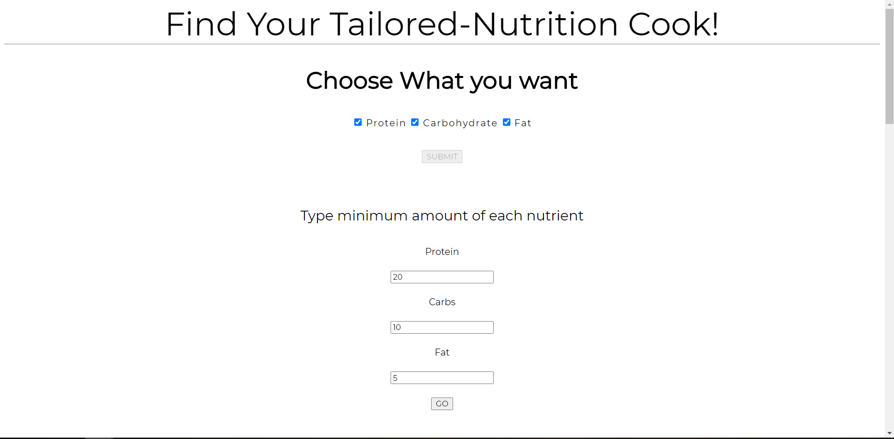

I AM _________ Developer
- 빠르게 익히고 손쉽게 적응하는
- 코드에 대한 의심과 배우려는 자세를 유지하는
- 맡은 업무를 반드시 책임지는
PROJECTS
-

1. Gym Routine
- 웨이트 트레이닝에 관한 정보를 보기 쉽게 정리한 반응형 페이지.
-
수많은 정보 사이에서 많은 사람들이 신뢰하고, 효율적이고 정확한
컨텐츠를 정리해
운동을 좋아하는 분들이 실용적으로 활용할 수 있는 페이지를 제공하고 싶어 제작했습니다. - quasar529.github.io/Gym_Routine
-

2. VanilaJS Projects
- 라이브러리 없이 JS로 구현한 유용한 기능 모음.
-
프론트 엔드 개발자는 다양한 라이브러리를 활용하는 것도
중요하지만
모든 토대는 'JavaScript'라고 생각합니다.
따라서 그 역량을 높이기 위해 여러 난이도의 다양한 프로젝트를 제작했고
그를 정리한 페이지입니다. - quasar529.github.io/VanilaJS_projects
-

3. What is Grid
- CSS Grid-Box 속성에 대해 정리한 반응형 페이지
-
'Grid Layout'은 반응형 페이지를 제작할 때 유용하게 쓰입니다.
그렇기에 해당 개념을 숙지하는 것이 많은 도움이 되는데,
새로운 지식을 배울 때 시각화된 자료가 학습에 효과적이기에 이 페이지를 제작했습니다. - quasar529.github.io/What_is_Grid
-

4. Simple Weather App
- React를 이용한 실시간 날씨 정보 페이지
- Open API 사용
-
처음으로 REACT를 이용해 프로젝트를 진행하는데 무엇을 주제로
할까 고민하다
매일 접하고 누구에게나 필요한 정보인 날씨를 활용해 제작했습니다.
'openweathermap'에서 실시간으로 정보를 호출해
우리나라 대표 도시들의 기온, 습도 등 정보를 한 눈에 볼 수 있게 정리한 페이지 입니다. - quasar529.github.io/simple_weather_app
-

5. Tailored Nutrition
- Open API를 이용한 요리 정보 제공 페이지
-
각자 본인에게 필요한 영양소를 원하는 만큼 섭취하기 위해선
많은 노력과 시간이 필요합니다.
이 페이지는 그 수고로움을 덜어주기 위해 제작했습니다
영양소를 선택하고 수치를 입력하면 해당 조건에 맞는 요리를 찾아줍니다.
현재는 단순한 정보만 표시하지만 레시피도 추가하고
선택할 수 있는 영양소의 종류를 추가할 예정입니다. - quasar529.github.io/Tailored_Nutrition
Contact
- email: quasar0529@gmail.com
- github: github.com/quasar529
- blog: eatcodingsleeprepeat.tistory.com